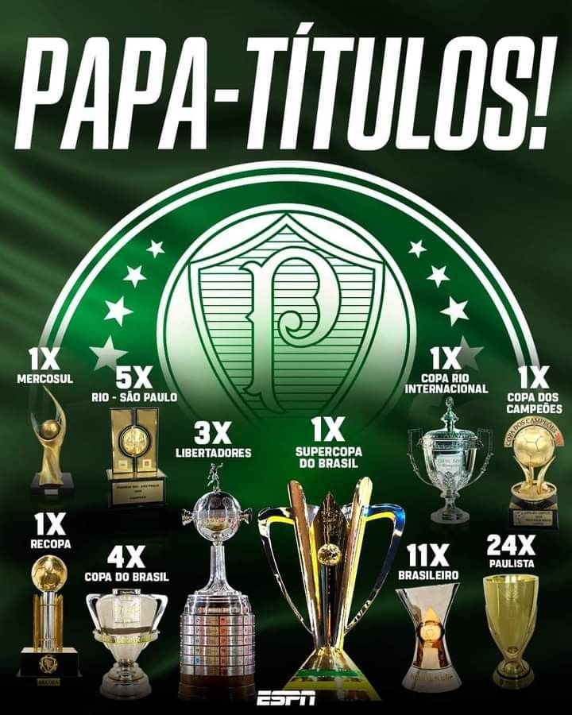

Principais Títulos
Quadro resumido dos títulos mais relevantes do clube atualizado até 2025.
| Título | Quantidade | Anos Importantes |
|---|---|---|
| Campeonato Brasileiro | 12 | 1960, 1967, 1969, 1972, 1973, 1993, 1994, 2016, 2018, 2022, 2023, 2024 |
| Copa do Brasil | 4 | 1998, 2012, 2015, 2020 |
| Copa Libertadores | 3 | 1999, 2020, 2021 |
| Campeonato Paulista | 26 | 1920, 1926, 1927, 1932, 1933, 1934, 1936, 1940, 1942, 1944, 1947, 1950, 1959, 1963, 1966, 1972, 1974, 1976, 1993, 1994, 1996, 2008, 2020, 2022, 2023, 2024 |
| Supercopa do Brasil | 1 | 2023 |
| Recopa Sul-Americana | 1 | 2022 |
| Torneio Rio-São Paulo | 5 | 1933, 1951, 1965, 1993, 2000 |
| Copa Mercosul | 1 | 1998 |
| Copa Rio Internacional | 1 | 1951 (Reconhecido como Mundial pela FIFA) |
| Copa Paulista | 1 | 2020 |
Observação: números atualizados até dezembro de 2025.
